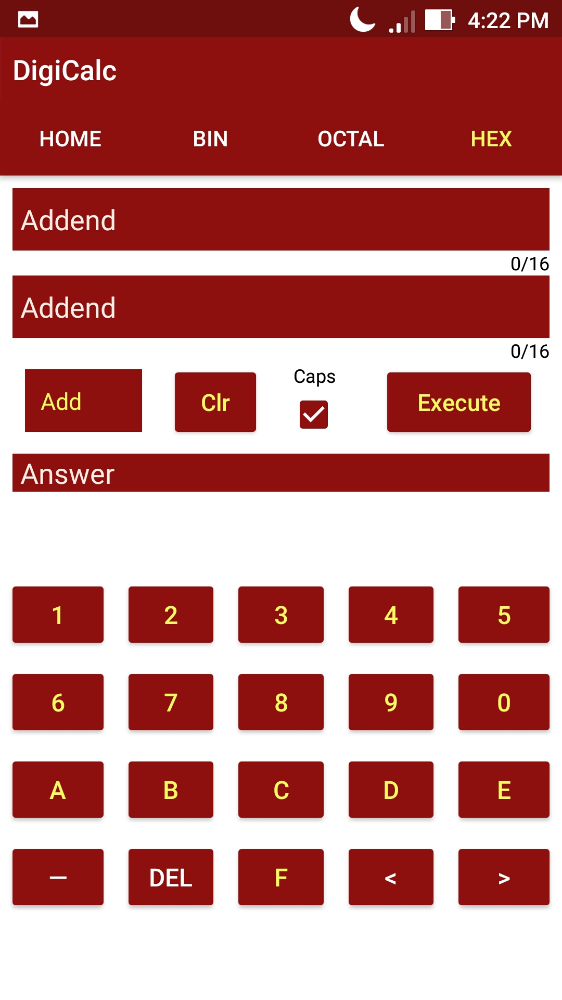
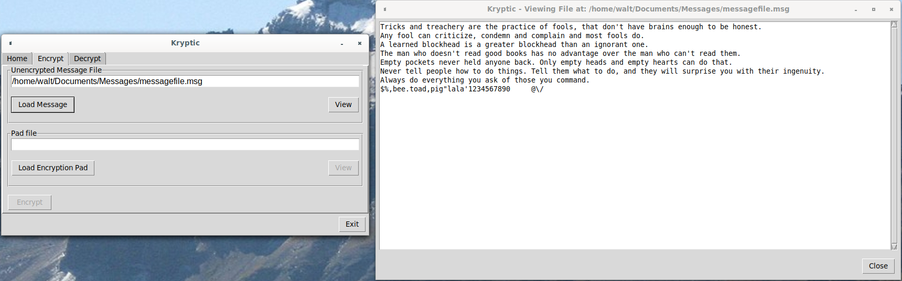
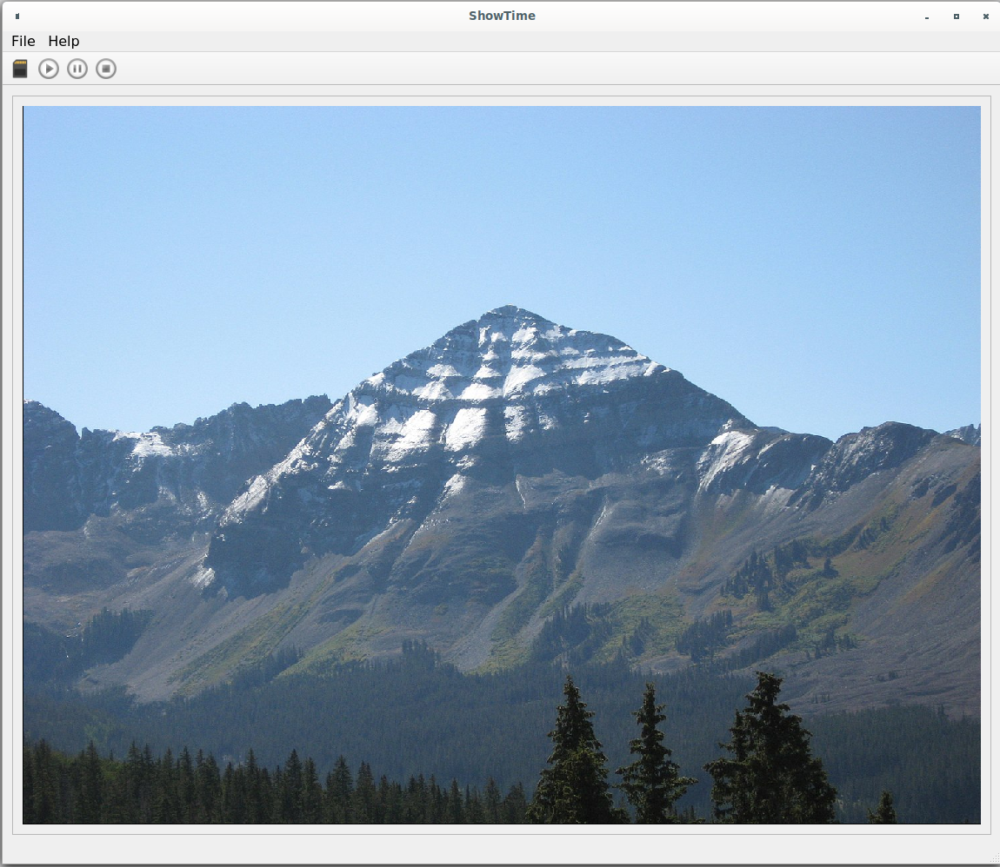

My Projects
Ease is a greater threat to progress than hardship.GitHub
Resume
-
Programming Portfolio
This web site. This is not a downloaded template. It was written with a text editor and uses JQuery.
Changing the text on the top and bottom banners only requires altering one file. JQuery is responsible for the
fade in text. The code is also in place but currently not visible for a floating left navigation bar and
only requires altering one file.
-
MyClassicCar
An Android app for classic car owner. Its star feature is storing part numbers for difficult to locate parts. I have found with my own
classic car that sometimes Parts Stores will not have a listing for a part I'm looking for. However, they are able to look up the part from a part
number that I provided them. This application also tracks oil changes, maintenance and repairs.
The opening view uses Android's ListView for a list of cars. Most people typically don't have more than two or three cars, so using a ListView element here works fine. The lists for
parts, maintenance, and oil changes makes use of the RecyclerView, as there could be, over time, hundreds of listings. RecyclerView "recycles"
a list "cell" once it is no longer is visable on the screen. This saves on device memory usage and keeps the app responsive. The RecyclerView's onClickListener is implemented with an Interface; which is the community
excepted "Best Way Practice" of implementation.
Other Android elements include dropdown menu on the toolbar, proper Back Navigation, Spinners, Buttons, and several others.
Data is persisted with the SQLite relational database management system. SQLite was selected as it is the standard DBMS on all android devices and is
very likely used by several other apps.
Available now on Google Play.
-
DigiCalc
An Android app that calculates 64 bit binary, octal and hexadecimal values. The idea for this app came while furthering my studies of computer architecture.
This app does not use Java's BigInteger or BigDecimal classes.
The foundation of this app are the properly working addition methods for binary, octal and
hexadecimal calculations. Equally as important are the methods for the 2s, 8s, and 16s complement converters for each base type. Subtraction is performed first by tapping on the desired base
value (anywhere in the text field) and then tapping minus sign on the keypad. This places a minus sign at the beginning of that base value. Tapping the minus key again removes it.
If there is a minus sign at the beginning of one of the values, a base-compliment addition is performed. Multiplication and division are merely extensions of addition and subtraction.
A recent feature enhancement saw the inclusion of a "Caps" CheckBox. This feature grants the choice of either upper of lower case "alpha" digits — 'A' or 'a' — for hexadecimal numbers. Your choice of case is persisted in a single object JSON file saved in the apps internal memory. (The file is only 14 bits in size.)
The Android elements used in this app are tabs with Fragments. Fragments are used to insert the custom keypads onto each of the base type tabs to enter values — the device's soft keyboard has been disabled.
Communication between the Fragment keypads and fields in the parent layout is performed using the ViewModel class. This implementation is much simpler
than an implementation involving an Interface.
The event-driven nature of the ViewModel class has made the functionality of the arrow, delete, and minus sign keys, on the keypads, possible. Each time a key is tapped it causes an event. That event calls the
callback method ViewModelProvider(). From the callback a method called etBehavior() is called — "et" standing for EditText. The etBehavior method was originally written to only handle the logic for the
minus sign in that the minus sign is always inserted on the far left end of the field. Subclassing of the EditText for just one bit logic was deemed unnecessary. Since then, logic for the arrow
and delete keys was added, as well as small blocks for permitting an increase to the permitted number of characters in a field if the minus sign was inserted, and logic to prevent any digits from being added to the left
side of the minus sign. A child-class will now be written to properly gather this logic in one place.
There are alternate layouts for when the device is rotated. There is also a layout for tablets.
Available now on Google Play.
View the code at the DigiCalc GitHub repo.
-
Kryptic
A Python 3 and TkInter program that performs the synchronous One-Time-Pad encryption. The text to be encrypted and the "Pad" are both read in from files.
The main part of the process is emulated with a singly circular linked list emulating an encryption wheel.
One-Time-Pad encryption is mathematically proven to be unbreakable
The Process
To perform an encryption take the first letter in the message and the first letter on the One-Time-Pad. Determine their numerical position in the alphabet and add those two numbers together,
where A = 0 and Z = 25. After adding, start counting at the beginning of the alphabet; if your added up value exceeds 25 start back at the beginning of the alphabet and continue counting where you left off — like going in a circle.
A short cut for values over 25 is to subtract 26 from them. For example: let Z = 25 and Y = 24. 25 + 24 = 49. 49 - 26 = 23. The 23rd position in the alphabet is X. Decryption is similar except it involves modular arithmetic.
Once a letter on the One-Time-Pad is used it is never used again. Just cross off that letter and keep going. Once a One-Time-Pad is used it is never used again.
During the encryption process all non-letter characters are removed and numbers are converted to their spelled out form. As a result the final decrypted message will be devoid of non-letter characters including spaces.
For details on making a One-Time-Pad for use with this program see the Github repo.
View the code at the Kryptic Github repo.
-
ShowTime
A Slideshow program program written in C++ with a Qt user interface. This is my
first time using Qt.
The heart of the program is the QThread in combination with a signal-and-slot. The thread contains an object with a signal-and-slot that receives a QStringList of filenames. The internal signal-and-slot
starts automatically upon instantiation and extracts a single filename from the passed in QStringList and emits it back to the parent thread and then 'pauses' for 5
seconds — QThread::msleep(x).
The signal-and-slot in the parent thread upon detecting a new filename causes an event and the predefined 'slot' (function) reads the photo file and inserts the image into the QLabel, which is the Qt element that displays photos.
Three additional variables are passed into the object (by reference) contained within the thread object. One variable is to adjust the delay time which is currently
hard coded in the parent thread. One variable passes in a value to create a pause when the pause button is clicked as Qthreads do not have a "pause".
The remaining variable holds one of four states when the "Start", "Stop" or "Select Folder" buttons are clicked or the program is terminated:
- 0 (zero) is set when the "Start" button is clicked and the thread with an object containing a signal-and-slot is instantiated.
- 1 is set. This terminates the thread when the application exiting. Cleanly exiting the program.
- 2 is set when the "Stop" button is clicked. This a modified 'pause' and results in the resetting the QStringList back to the beginning.
- 3 is set when the "Select Folder" button is clicked. This is also a modified 'pause' except it clears the QStringList and then
reloads it with a new list of filtered filenames gathered from the newly selected folder.
View the code at the ShowTime GitHub repo.
Resume
{kind=link}
{kind=link}
{kind=link}
{kind=link}